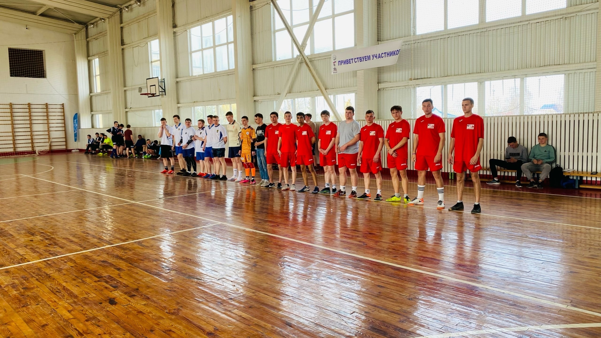

 Специальность: «Физическая культура» 49.02.01. Описание специальности. Квалификации выпускника по стандарту — педагог по физической культуре и спорту. Воспитание детей, подростков и молодежи в процессе реализации основных общеобразовательных программ и организации физкультурно-спортивной деятельности в учреждениях общего образования, довузовского профессионального образования, дополнительного образования, отдыха и оздоровления детей.
Наши контакты:
Адрес:р.п. Зубова Поляна, ул. Новикова-Прибоя, д.16а
Телефон: 8(83458) 2-19-54
Email: koll.pedag.zp@e-mordovia.ru